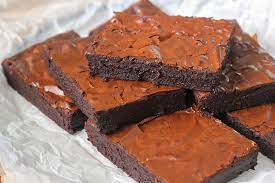

Brownie

Description
The BEST brownie recipe! With crispy edges, fudgy middles, and rich chocolate flavor, these homemade brownies will disappear in no time.
Ingredients
- Sugar
- Flour
- Salt
- Chocolate chips
- 2 eggs + water
- Powdered sugar
- Unsweetened cocoa powder
- Oil
- Vanilla Extract
Steps
- Mix together the dry and wet ingredients in two separate bowls. Combine the sugar, flour, powdered sugar, cocoa powder, chocolate chips, and salt in a medium bowl. Then, whisk together the eggs, olive oil, and water in a large one.
- Combine the wet and dry ingredients. Sprinkle the dry mixture over the wet one, and fold until just combined. The batter will be thick!
- Pour the batter into an 8×8 inch baking pan lined with parchment paper. Use a rubber spatula to spread it to all four sides of the pan and to smooth the top. The mixture will be very thick – that’s ok.
- Finally, bake! Transfer the pan to a 325-degree oven and bake for 40 to 45 minutes, until a toothpick inserted comes out with a few crumbs attached. Allow the brownies to cool completely before slicing and serving. Enjoy!